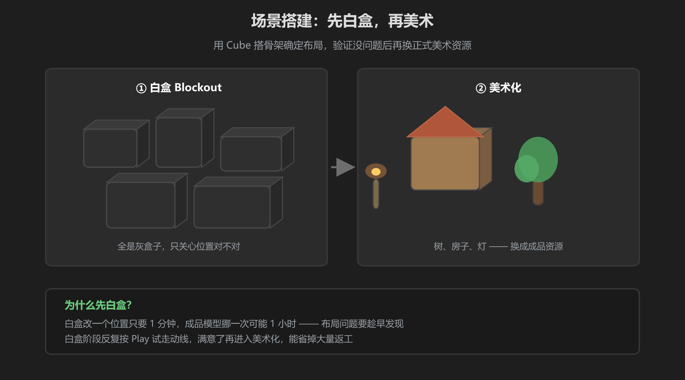
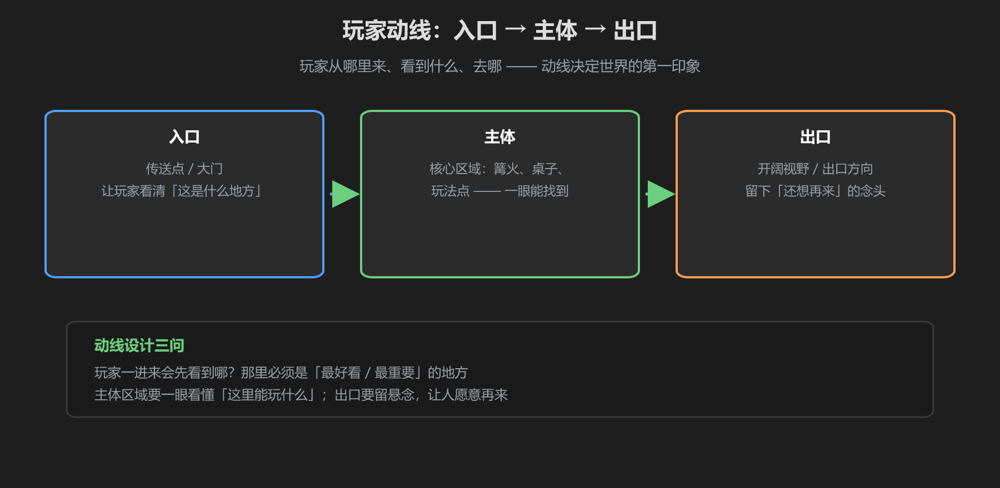

第 1 篇：场景设计 — 白盒、动线、叙事
搭场景的第一步不是放漂亮的模型，而是想清楚布局。本篇讲三件事：怎么用白盒快速定骨架、玩家进来怎么走（动线）、场景想讲什么故事（叙事）。
1. 白盒 Blockout：用 Cube 搭骨架

图：先用灰盒子定位置，满意后再换成美术资源
白盒阶段的操作很简单：用 GameObject → 3D Object → Cube 把地面、墙、台阶、房间边界全用灰色盒子搭出来。然后按 Play 在里面走一遍：走不通的地方、太挤的走廊、跳不上去的台阶，全部在白盒阶段改掉。
为什么必须先白盒？挪一个灰盒子只要 1 分钟，换好模型再挪可能要 1 小时。布局问题趁早发现，能省掉大量返工。VRChat 里尤其重要 —— 玩家视角高度、碰撞手感都要在真实尺寸里验证。
2. 动线设计：玩家从哪里来、看到什么、去哪

图：入口 → 主体 → 出口，一条清晰的路线
动线（Player Flow）是玩家在场景里的移动路线。设计时问自己三个问题：
- 从哪里来：Spawn 点在哪？玩家一进来第一眼看到什么？
- 看到什么：最重要的东西（篝火、舞台、玩法点）必须在视线第一目标位置
- 去哪：玩完怎么离开？出口或返回点要留得住期待感
常见错误：把世界做成「迷宫」，玩家进来不知道往哪走，转一圈就退出了。VRChat 世界的留存率，很大程度取决于玩家 30 秒内能不能找到「这里在玩什么」。
3. 场景叙事：氛围三段论
把场景当故事讲，节奏是：入口（引入）→ 主体（展开）→ 出口（回味）。
| 段落 | 氛围目标 | 手法举例 |
|---|---|---|
| 入口 | 第一印象：这是什么地方 | 窄门 / 拱门，把视线压向主体区域 |
| 主体 | 核心体验：聚集、游玩、交谈 | 开阔区域 + 中心焦点（篝火/舞台） |
| 出口 | 余韵：还想再来的理由 | 高处眺望点 / 隐藏彩蛋 / 渐变的灯光 |
4. VRChat 社交空间：聚集点设计
VRChat 是社交世界，场景要把人聚到一起，而不是把人拆散：
- 每个区域都有一个聚集点：篝火旁、吧台前、舞台下 —— 有焦点，人才会聚
- 聚集点之间视线通透：站在 A 点能看到 B 点有人，人才会走过去
- 留出宽松的站立空间：VRChat 玩家会互相靠近聊天，过窄的区域会让人难受
记住：世界是给人逛和聚的。布局服务于「人在里面怎么走、怎么站、怎么聊」，而不是服务于截图好不好看。
学前检查清单
- 理解了白盒流程：先 Cube 骨架，再美术资源
- 能用「入口 → 主体 → 出口」画出自己场景的动线
- 能给每个区域找到明确的聚集点
- 在白盒阶段按 Play 实际走了一遍